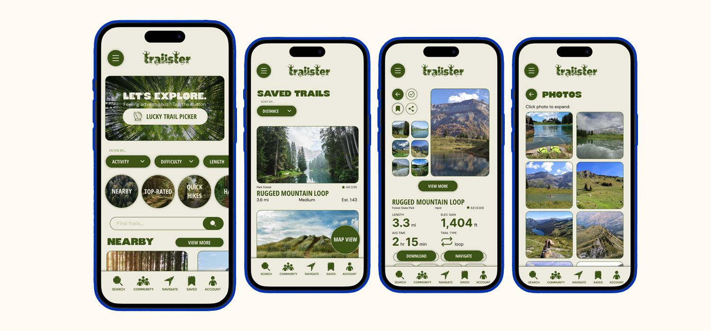
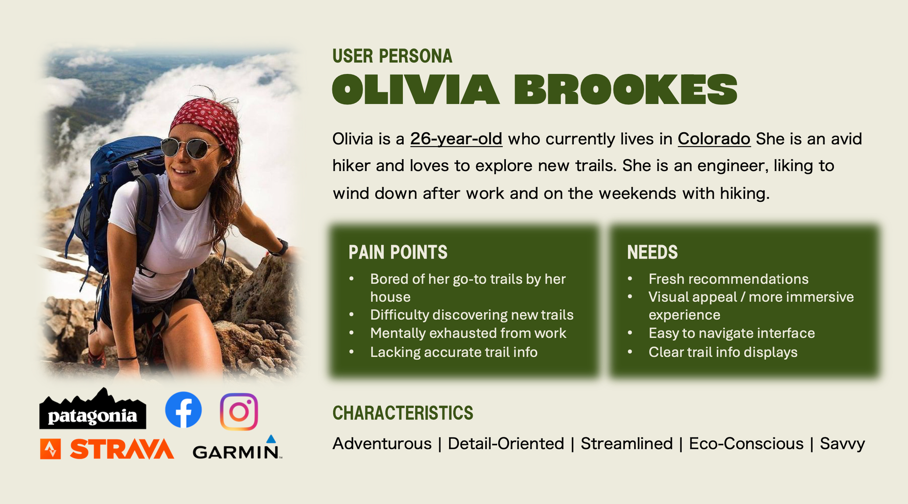
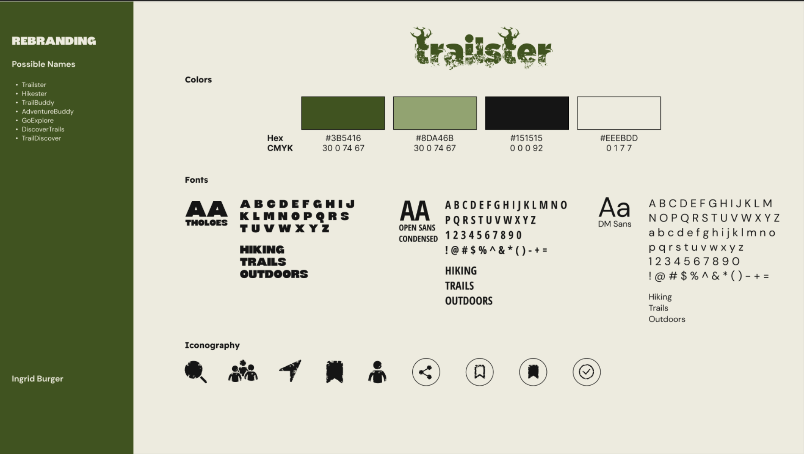
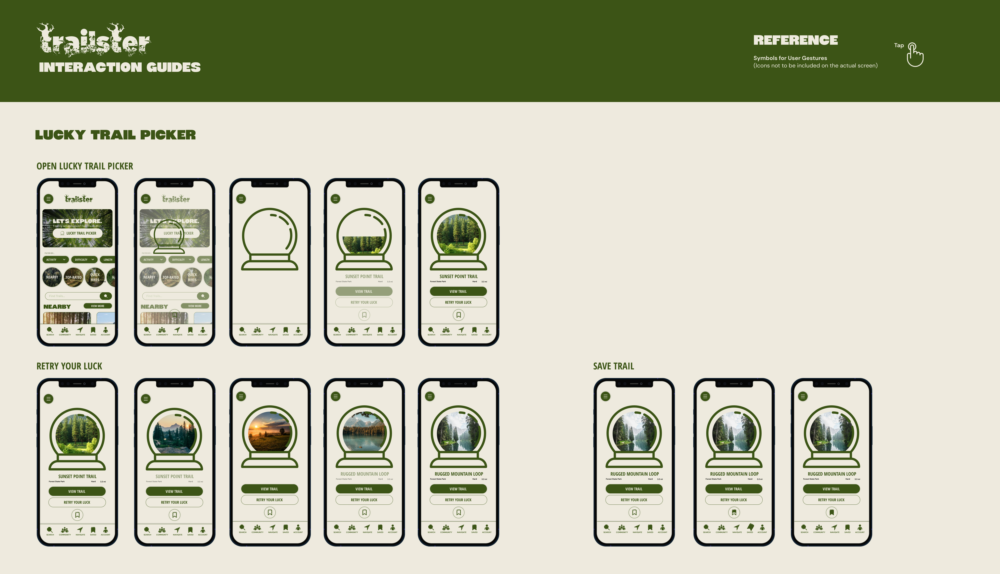
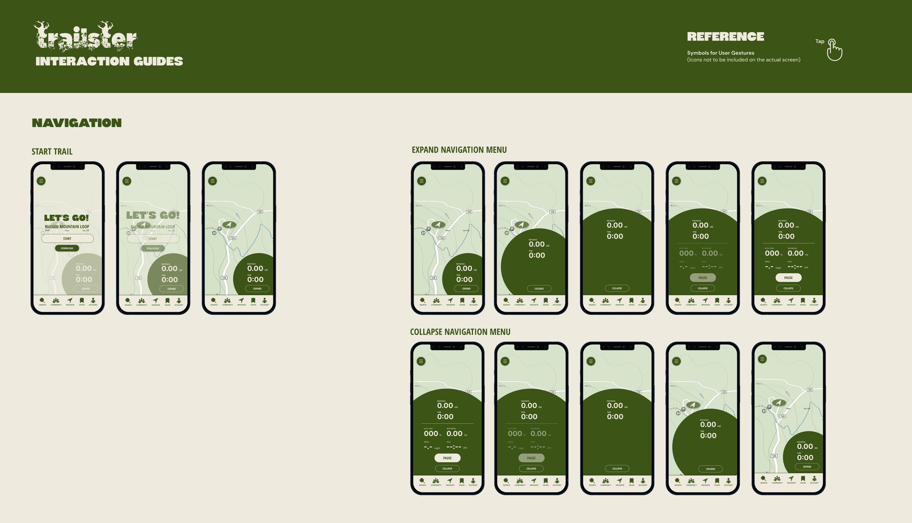
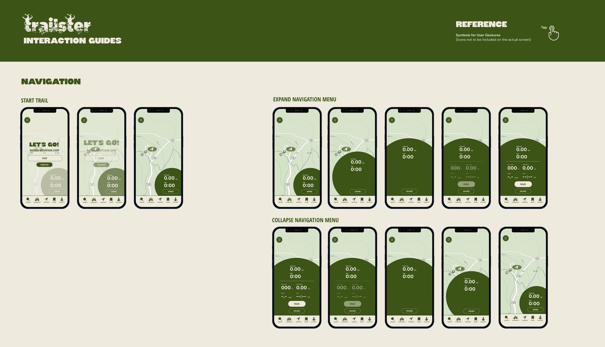

Case Study #3:
Trailster
Introduction
The outdoor recreation industry has seen significant changes in our increasingly digital world. AllTrails offers a comprehensive and personalized recommendation system that has completely transformed the way hikers discover new trails. Its platform allows users to easily bookmark and save their favorite trails while also discovering new adventures. This case study explores my redesign of AllTrails into Trailster, a highly immersive and user-centric version of the hiking app that addresses the evolving needs of modern outdoor enthusiasts.
User Research
To gain a more comprehensive understanding of the user being designed for, I began with user research. After looking into Trailster’s primary user bases, I created the following user persona:
Working professionals like Olivia Brookes represent users who seek outdoor escapes but often struggle with decision fatigue from their daily routines. Many in this key audience experience mental exhaustion from work, making it essential to have an interface that helps reduce cognitive load and simplify the process of discovering new trails. These users also value visual appeal and immersive experiences, similar to those found in other popular lifestyle and travel apps they likely use. This research gives way to several key priorities in the redesign: creating a visually appealing interface, streamlining navigation, offering clear information displays, and developing an innovative recommendation system to help users break out of their usual hiking patterns.
Goals
In redesigning this app, I focused on two primary goals:
- Improving the user experience.
- Implementing an intelligent recommendation system.
- Creating a more engaging visual discovery interface.
- Reducing cognitive load when using app.
- Increasing engagement.
- Designing a more immersive visual experience.
- Implementing features that encourage regular use.
- Introducing a new feature that gamifies trail selection.
Task Flow
For the purpose of this project, I will be focusing on the following task flow:

Home Screen:
- Explore trails by either:
- Using the Trail Generator button for random, personalized trail suggestions
- Browsing trails under various categories.
- Filtering trails by different factors.
- Use the bottom bar to navigate between pages.
Saved Trails:
- View a list of bookmarked trails.
- See key trail details like distance, elevation, and time on each trail card.
- Tap the button on the bottom right to access a map view of saved trails.
- Tap anywhere on a trail card to go to the trail profile.
Trail Map:
- Zoom in or out on the trail map.
- Start navigating directly from the map.
Trail Profile:
- Access trail profiles by tapping trail cards on either the home or saved pages.
- View detailed trail information.
- Tap "View More" to explore community photos of the trail.
- Use the buttons above the navigation bar to download or start the trail.
Photos:
- Browse a gallery of trail images.
- Tap photos to enlarge.
- Tap the "Close" button to exit the enlarged view.
Trail Activity:
- Track real-time data like time, distance, speed, and elevation during the trail.
- Switch between a basic or detailed view of trail stats.
- Pause or stop the activity at any time.
This flow takes the user from trail discovery to saving and viewing trails and finally navigating and tracking a hike.
Design Choices
Color Scheme: I chose a four-color palette for this interface. I chose two green tones with enough contrast to be clearly distinguishable, which reflect the natural outdoor environment the app represents. Since a key goal was maintaining a simple, clean interface, I limited the vibrant colors to just these two greens. I balanced them with a deep charcoal gray and warm beige for the foundation colors. I specifically chose beige as the primary background color to improve the app's visibility outdoors—since users are often checking trails in bright sunlight, a lighter interface makes the content much easier to read.
Logo and Iconography: I designed the logo to capture the essence of outdoor adventure, incorporating trees growing from distressed letterforms in the darker green from my color palette. This weathered aesthetic comes through to the iconography to maintain a consistent rugged theme. By contrasting these tough elements with the app's overall clean, modern interface, I created a balanced design that feels both polished and outdoorsy.
Font Choices:
Headers: Tholoes is a bold capitalized font that stands out as a header and conveys a sense of strength and daring adventure.
Subheaders: Open Sans Condensed in uppercase is a clean, modern font that maximizes readability while complementing the boldness of the header text.
Paragraphs DM Sans is contemporary and highly legible, ensuring users can quickly absorb essential trail information.
Interaction Guides
For each animation, I made an interaction guide to outline each component.

 

Final Prototype
The final prototype of the app reflects the fun and outdoorsy while also sleek and modern vibe of the Trailster rebrand. Take a look below: